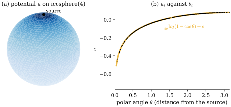
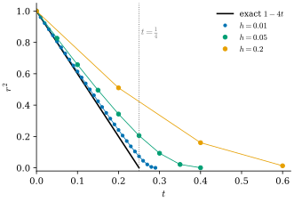
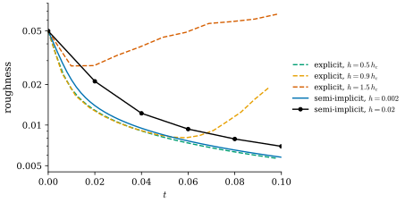
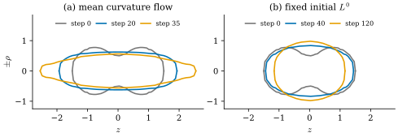

42.6 Poisson Problems and Implicit Mean Curvature Flow
Goals
- 닫힌 mesh의 Poisson problem \(Lu = M\rho\)를 평균 제거와 symmetric positive definite 행렬 \(-L + aa^{\mathsf T}\)로 풀고, 그 해가 존재하고 유일함을 증명할 수 있다.
- 점 원천의 potential을 sphere의 정확한 Green's function과 비교하고, dense Cholesky factorization을 여러 오른쪽에 다시 쓸 수 있다.
- heat equation의 backward Euler step이 모든 time step에서 안정하고 열의 총량을 보존함을 보이고, explicit step의 한계 \(h \lesssim 0.3\bar\ell^2\)을 계산할 수 있다.
- semi-implicit mean curvature flow를 구현하고, 그것이 넓이를 늘리지 않음을 증명하며, 처음 mesh의 \(L\)을 고정한 변형과 비교할 수 있다.
Prerequisites
- Proposition 42.2.11: 닫힌 곡면의 Poisson equation, Remark 42.2.14: Green's function
- Corollary 42.3.6: \(-u^{\mathsf T}Lu = \int\abs{\grad W_0u}^2\), connected mesh에서 \(\ker L = \Span\{\mathbf{1}\}\)
- Proposition 42.4.5: mixed Voronoi area는 양수다
- Proposition 37.6.5: linear gradient flow의 explicit과 implicit step, Proposition 37.6.7: semi-implicit step은 길이를 늘리지 않는다
Motivation
Section 42.5까지 \(L\)과 \(M\)을 만들고 boundary condition을 넣는 법을 정리했다. 이 절은 boundary 없는 mesh로 돌아가 그 행렬로 세 가지 계산을 한다. 첫째는 Poisson problem이다. 닫힌 곡면에서는 해가 상수 차이로만 정해지므로 행렬이 singular이고, 그것을 다루는 깔끔한 방법이 필요하다. 둘째는 heat equation이다. 시간을 이산화하는 방법에 따라 같은 \(L\)이 안정하기도, 폭주하기도 한다. 셋째는 mesh의 위치 자체에 heat equation을 쓰는 것, 곧 mean curvature flow다. Chapter 41은 이 flow를 넓이의 gradient flow로 다룬다(Section 41.5 [확인 필요: Chapter 41 미작성 — 참조 번호 확정 필요]). 여기서는 Laplacian으로 implicit하게 푼다. 그러면 time step을 키워도 안정하고, 넓이가 결코 늘지 않는다.
Poisson Problems on Closed Meshes
connected closed mesh에서 \(L\)은 symmetric이고 kernel이 상수다(Corollary 42.3.6). \(M = \diag(m_1, \dots, m_{n_0})\)은 양수 dual area(barycentric 또는 mixed)의 대각 행렬이고, \(a := M\mathbf{1} = (m_1, \dots, m_{n_0})\)이라 쓰자. 닫힌 곡면의 Poisson equation \(\Delta u = \rho\)(Proposition 42.2.11)은 \(Lu = M\rho\)가 된다 [Cr §6.5].
Proposition 42.6.1 (solving \(Lu = b\) on a closed mesh). connected closed mesh와 위의 \(M\), \(a\)에 대하여
- (a) \(Lu = b\)가 해를 가질 필요충분조건은 \(\mathbf{1}^{\mathsf T}b = 0\)이고, 해는 상수 vector를 더한 것만큼 다르다.
- (b) \(\bar\rho := a^{\mathsf T}\rho/a^{\mathsf T}\mathbf{1}\)(넓이 가중 평균)이라 하면 \(b = M(\rho - \bar\rho\mathbf{1})\)은 \(\mathbf{1}^{\mathsf T}b = 0\)을 만족한다.
- (c) \(-L + aa^{\mathsf T}\)는 symmetric positive definite이다.
- (d) \(\mathbf{1}^{\mathsf T}b = 0\)이면 \((-L + aa^{\mathsf T})u = -b\)의 해는 \(a^{\mathsf T}u = 0\)과 \(Lu = b\)를 만족한다. 곧 (a)의 해 가운데 넓이 가중 평균이 \(0\)인 하나다.
Proof. (a) Proposition 42.5.10의 증명과 같다(symmetric matrix의 image는 kernel \(\Span\{\mathbf{1}\}\)의 orthogonal complement). (b) \(\mathbf{1}^{\mathsf T}M(\rho - \bar\rho\mathbf{1}) = a^{\mathsf T}\rho - \bar\rho\,a^{\mathsf T}\mathbf{1} = 0\)이다. (c) symmetric은 분명하다. \(u^{\mathsf T}(-L + aa^{\mathsf T})u = -u^{\mathsf T}Lu + (a^{\mathsf T}u)^2\)의 두 항은 \(0\) 이상이다. 합이 \(0\)이면 \(-u^{\mathsf T}Lu = 0\)이라 \(u = c\mathbf{1}\)이고(Corollary 42.3.6), \(a^{\mathsf T}u = c\,a^{\mathsf T}\mathbf{1} = 0\)에서 \(a^{\mathsf T}\mathbf{1} = \sum m_i \gt 0\)이므로 \(c = 0\)이다. (d) \(\mathbf{1}^{\mathsf T}L = 0\)이므로 \(\mathbf{1}^{\mathsf T}(-L + aa^{\mathsf T})u = (\mathbf{1}^{\mathsf T}a)(a^{\mathsf T}u)\)이고, 이것이 \(-\mathbf{1}^{\mathsf T}b = 0\)과 같으므로 \(a^{\mathsf T}u = 0\)이다. 그러면 식은 \(-Lu = -b\)가 된다.
이 명제 덕분에 singular한 \(L\) 대신 positive definite인 \(-L + aa^{\mathsf T}\)를 한 번 factorization해 두고 오른쪽만 바꾸어 풀 수 있다. 한 vertex의 값을 \(0\)으로 고정하고 그 행과 열을 지우는 방법도 있다(남은 행렬은 Proposition 42.5.7과 같은 이유로 positive definite이다). 다만 그 방법은 해의 평균이 아니라 한 점의 값을 정하므로, 평균이 필요하면 나중에 빼야 한다. 평균을 빼는 단계 (b)는 smooth의 Proposition 42.2.11(d)와 같고, 같은 주의가 따른다. 문제의 원천에 실제로 상수 성분이 있다면 그것을 지우는 것은 문제를 바꾸는 일이다.
Example 42.6.2 (a point source on the sphere). unit sphere의 북극에 총량 \(1\)의 원천을 두자. 닫힌 곡면이므로 곡면 전체에 고른 흡수 \(-1/(4\pi)\)를 함께 둔다(Remark 42.2.14). potential은 북극에서 잰 polar angle \(\theta\)만의 함수이고
이다. 실제로 \(\theta \gt 0\)에서 \(\Delta G = \tfrac{1}{\sin\theta}\partial_\theta(\sin\theta\,\partial_\theta G)\) \(= \tfrac{1}{4\pi\sin\theta}\partial_\theta(1 + \cos\theta)\) \(= -\tfrac{1}{4\pi}\)이고(Exercise 38.6.2의 좌표 공식), 북극 둘레의 작은 원을 지나는 flux가 \(1\)에 간다(Exercise 42.6.3). 북극 근처에서 \(1 - \cos\theta \approx \theta^2/2\)이므로 \(G \approx \tfrac{1}{2\pi}\log\theta\), 곧 평면의 Green's function과 같은 특이성이다. mesh에서는 원천 vertex \(s\)에서 \(\rho_s = 1/m_s\), 나머지에서 \(\rho = 0\)으로 두고(그러면 \(a^{\mathsf T}\rho = 1\)) Proposition 42.6.1로 푼다. icosphere(4)(mixed Voronoi \(M\))에서 \(\bar\rho = 0.07967\)(\(1/(4\pi) = 0.07958\)과 넓이의 차이만큼 다르다)이고, 원천에서 \(\theta \gt 0.3\)만큼 떨어진 vertex에서 discrete 해는 (42.6.1)과 \(4.4\times10^{-4}\) 안에서 같다(icosphere(3)에서는 \(1.2\times10^{-3}\)).
Verification: verify/v-42-6-implicit-mcf.py

dgmesh.icosphere(4)(vertex 2562개, mixed Voronoi \(M\))에서 북극 vertex에 총량 \(1\)의 원천을 두고 \(Lu = M(\rho - \bar\rho\mathbf{1})\)을 \((-L + aa^{\mathsf T})u = -b\)로 푼 해(넓이 가중 평균 \(0\)). 읽는 법: (a)는 앞쪽 반구의 face를 \(u\)로 칠한 것이다(진한 파랑이 작은 값, 옅은 파랑이 큰 값). 검은 점이 원천이다. (b)의 가로축은 원천에서 잰 각 \(\theta\)(sphere 위의 거리), 세로축은 \(u\)이고, 작은 검은 점이 vertex마다의 값, 주황 곡선이 정확한 Green's function (42.6.1)(상수 \(c\)는 \(\theta \gt 0.3\)에서 맞추었다)이다. 볼 것: (b)의 점들이 곡선과 구별되지 않는다(\(\theta \gt 0.3\)에서 최대 차이 \(4.4\times10^{-4}\)). \(u\)는 원천 쪽으로 로그처럼 내려가 원천 vertex에서 \(-0.731\)이고, 반대편으로 갈수록 평평해진다. 원천이 \(\Delta u\)를 양수로 만드는 곳이므로 그곳의 값이 둘레의 평균보다 작다(Proposition 42.1.2). 본문과의 연결: Proposition 42.6.1, Example 42.6.2. icosphere(3) 위의 interactive version이 있다.Figure 42.6.1의 (b)를 보자. 원천에서 멀어질수록 potential이 올라가는데, 그 속도는 \(\theta\)가 작은 곳에서 크고 반대편에서는 거의 \(0\)이다. 반대편의 기울기가 \(0\)인 것은 고른 흡수 \(-1/(4\pi)\) 때문이다. 흡수가 없었다면 열이 빠져나갈 곳이 없어 평형이 없었을 것이다. 강의 슬라이드는 점 원천의 해를 Green's function이라 부르고, 원천이 여럿이면 그 해들을 더하면 된다고 설명한다 [CMU-DDG L18] slide 41. linear system으로 말하면 같은 factorization으로 오른쪽만 바꾸어 푸는 것이다(Exercise 42.6.5).
Remark 42.6.3 (dense linear algebra and its limits). 이 study set은 scipy를 쓰지 않으므로(부록 E) 행렬을 dense numpy 배열로 둔다. \(n_0\times n_0\) 배열은 \(8n_0^2\) bytes이므로 icosphere(4)(\(n_0 = 2562\))에서 약 \(52\) MB, icosphere(5)(\(10242\))에서는 약 \(840\) MB다. Cholesky factorization은 약 \(n_0^3/3\)번의 연산(icosphere(4)에서 \(5.6\times10^9\))이고, 한 번 해 두면 오른쪽 하나마다 두 번의 triangular solve, 곧 \(2n_0^2\)번의 연산만 든다. 그래서 이 장의 예는 \(n_0\)가 수천까지인 mesh로 제한했다. 실제 geometry processing에서는 \(L\)이 vertex마다 이웃 수만큼만 \(0\)이 아닌 sparse matrix라는 것을 이용한다 [Cr §6.4]. positive (semi)definite system은 sparse Cholesky factorization으로 풀고 [Cr §8.1.3], 그러면 수십만 vertex의 mesh도 같은 방식으로 다룰 수 있다. numpy에는 triangular solver가 없으므로 아래 Implementation은 forward/back substitution을 직접 쓴다.
The Heat Equation and Implicit Time Steps
heat equation \(\partial_tu = \Delta u\)는 “값이 이웃의 평균 쪽으로 움직인다”는 식이다(Proposition 42.1.2) [CMU-DDG L18] slide 15. 공간을 이산화하면 \(M\dot u = Lu\)이고, 시간을 이산화하는 두 가장 단순한 방법은 Chapter 37의 forward Euler와 backward Euler다((37.6.3)).
Proposition 42.6.4 (backward Euler for the heat equation). \(M\)이 양수 대각 행렬이고 \(L, M\)이 고정되었다고 하자. \(-L\varphi_j = \lambda_jM\varphi_j\)(\(0 = \lambda_0 \le \lambda_1 \le \cdots \le \lambda_{\max}\))를 \(M\)-orthonormal한 generalized eigenvector라 하자(Proposition 31.4.2).
- (a) 모든 \(h \gt 0\)에서 \(M - hL\)은 symmetric positive definite이다.
- (b) implicit step은 열의 총량을 보존한다: \(\mathbf{1}^{\mathsf T}Mu^{k+1} = \mathbf{1}^{\mathsf T}Mu^k\).
- (c) implicit step은 \(u\)의 \(\varphi_j\) 성분에 \(1/(1 + h\lambda_j) \in (0, 1]\)을 곱한다. 따라서 모든 \(h \gt 0\)에서 \(\norm{u^{k+1}}_M \le \norm{u^k}_M\)이고 \(-\tfrac12u^{\mathsf T}Lu\)도 늘지 않는다.
- (d) explicit step은 \(\varphi_j\) 성분에 \(1 - h\lambda_j\)를 곱하고, 모든 처음 값에서 유계일 필요충분조건은 \(h \le h_c := 2/\lambda_{\max}\)이다.
Proof. (a) \(u^{\mathsf T}(M - hL)u = u^{\mathsf T}Mu + h\,u^{\mathsf T}(-L)u\)이고 첫 항은 \(u \ne 0\)이면 양수, 둘째 항은 \(0\) 이상이다(Corollary 42.3.6). (b) \(\mathbf{1}^{\mathsf T}L = 0\)이므로 \(\mathbf{1}^{\mathsf T}(M - hL)u^{k+1} = \mathbf{1}^{\mathsf T}Mu^{k+1}\)이고 이것이 \(\mathbf{1}^{\mathsf T}Mu^k\)와 같다. (c), (d)는 Proposition 37.6.5를 \(K = -L\), \(E(u) = -\tfrac12u^{\mathsf T}Lu\)에 쓴 것이다. 성분으로 보면 \(u = \sum_jc_j\varphi_j\)에서 \((M - hL)\varphi_j = (1 + h\lambda_j)M\varphi_j\)이므로 implicit step의 계수는 \(c_j/(1 + h\lambda_j)\), explicit step은 \(M^{-1}L\varphi_j = -\lambda_j\varphi_j\)에서 \((1 - h\lambda_j)c_j\)이고, \(\norm{u}_M^2 = \sum_jc_j^2\)이다.
implicit step은 모든 주파수를 줄이되 높은 주파수일수록 많이 줄인다. 그래서 큰 \(h\)에서 정확하지는 않아도 결코 폭주하지 않는다. \(\lambda_0 = 0\)의 성분(평균)은 그대로 남는다는 것이 (b)이고, \(k \to \infty\)이면 \(u^k\)는 처음 값의 넓이 가중 평균인 상수로 간다. explicit step의 한계 \(h_c\)는 \(\lambda_{\max}\), 곧 mesh가 표현할 수 있는 가장 짧은 파장의 진동으로 정해진다. 그 eigenvalue는 edge 길이의 제곱에 반비례한다.
Example 42.6.5 (the explicit limit on the icosphere). icosphere(1), (2), (3)(mixed Voronoi \(M\))에서 \(\lambda_{\max}\bar\ell^2\)은 \(6.16, 6.61, 6.99\)이고, 따라서 \(h_c = 2/\lambda_{\max}\)는 \(0.325\bar\ell^2, 0.303\bar\ell^2, 0.286\bar\ell^2\)이다(\(\bar\ell\)은 평균 edge 길이). mesh를 한 번 세분할 때마다 explicit step은 약 \(\tfrac14\)로 작아져야 하고, 같은 시각까지 가는 데 4배의 step이 든다. \(L, M\)을 고정한 explicit heat step을 400번 하면 \(h = 0.99h_c\)에서 \(M\)-norm이 줄지만 \(h = 1.01h_c\)에서는 \(400\)배 이상 커진다(Exercise 42.6.4).
Verification: verify/v-42-6-implicit-mcf.py
heat equation의 implicit step은 \(L, M\)이 고정이므로 \(M - hL\)을 한 번 factorization해 두면 모든 step이 두 번의 triangular solve다. 열이 퍼지는 모습을 보는 heat flow, smoothing filter, 그리고 Chapter 44의 heat method(한 번의 backward Euler step과 Poisson solve로 거리를 얻는다)가 이 계산이다.
Implicit Mean Curvature Flow
이제 \(u\) 대신 vertex 위치 \(\mathbf{x}\)에 heat equation을 쓴다. smooth에서 \(\partial_t\mathbf{x} = \Delta\mathbf{x} = 2H\mathbf{N}\)((0.4.3))은 곡면을 normal 방향으로 mean curvature에 비례해 움직이는 mean curvature flow(평균곡률 흐름)이다(정의는 Section 41.5 [확인 필요: Chapter 41 미작성 — 참조 번호 확정 필요], Tour의 Animation 0.4.4). 넓이를 가장 빨리 줄이는 흐름이고, 반지름 \(r_0\)인 sphere는 \(r(t)^2 = r_0^2 - 4t\)로 줄어 \(t = r_0^2/4\)에 한 점이 된다(Exercise 0.4.4). mesh에서는 \(L\)과 \(M\)이 \(\mathbf{x}\)에 의존하므로 식이 비선형이다. 한 step 동안 그것을 지금의 mesh에서 계산한 값으로 고정하고 implicit step을 하는 것이 semi-implicit step이다 [Cr §6.6], [Desbrun99].
세 좌표를 각각 같은 행렬로 푼다. \(M^k\)는 양수가 보장되는 dual area(mixed Voronoi 또는 barycentric, Proposition 42.4.5)로 고른다. circumcentric area는 \(0\) 이하가 될 수 있어 \(M^k - hL^k\)가 positive definite이 아닐 수 있다. 이 step은 \(L, M\)을 얼렸으므로 진짜 implicit step이 아니지만, 넓이에 대해서는 다음이 정확히 성립한다. Chapter 37의 곡선판(Proposition 37.6.7)과 같은 생각을 곡면에서 쓴다.
Theorem 42.6.6 (the semi-implicit step never increases area). \(\mathbf{x}^k\)의 모든 face가 퇴화하지 않았고 \(M^k\)가 양수 대각 행렬이면, 모든 \(h \gt 0\)에서 (42.6.3)의 해 \(\mathbf{x}^{k+1}\)은 \(\operatorname{Area}(\mathbf{x}^{k+1}) \le \operatorname{Area}(\mathbf{x}^k)\)를 만족한다.
Proof idea: 지금의 mesh를 기준으로 한 Dirichlet energy \(E_k(\mathbf{y}) = -\tfrac12\sum_c\mathbf{y}_c^{\mathsf T}L^k\mathbf{y}_c\)는 \(\mathbf{y} = \mathbf{x}^k\)에서 넓이와 같고, 다른 \(\mathbf{y}\)에서는 넓이 이상이다(산술-기하 평균). semi-implicit step은 \(E_k\)에 이동 거리의 벌을 더한 것을 최소화하므로 \(E_k\)를 늘리지 않는다.
Proof. \(\mathbf{y} \in \R^{n_0\times3}\)의 세 열을 \(\mathbf{y}_c\)라 하고 \(E_k(\mathbf{y}) := -\tfrac12\sum_{c=1}^3\mathbf{y}_c^{\mathsf T}L^k\mathbf{y}_c\)라 하자. Corollary 42.3.6을 mesh \(\mathbf{x}^k\)에서 쓰면
\[ E_k(\mathbf{y}) = \frac12\sum_c\int_{\mathbf{x}^k}\abs{\grad W_0\mathbf{y}_c}^2\,dA = \sum_fA_f(\mathbf{x}^k)\,\tfrac12\norm{J_f}_F^2 \]
이다. 여기서 \(J_f\)는 \(\mathbf{x}^k\)의 face \(f\)를 \(\mathbf{y}\)의 face \(f\)로 보내는 affine map의 derivative(face 평면의 orthonormal frame에서 \(3\times2\) 행렬)이고, 그 세 행이 \(W_0\mathbf{y}_c\)의 gradient이다. (i) \(\mathbf{y} = \mathbf{x}^k\)이면 이 map은 face 평면의 포함사상이라 \(J_f\)의 두 열이 orthonormal이고 \(\tfrac12\norm{J_f}_F^2 = 1\)이므로 \(E_k(\mathbf{x}^k) = \operatorname{Area}(\mathbf{x}^k)\)이다. (ii) 일반적으로 \(J_f\)의 singular value를 \(\sigma_1, \sigma_2\)라 하면 \(\tfrac12\norm{J_f}_F^2 = \tfrac12(\sigma_1^2 + \sigma_2^2) \ge \sigma_1\sigma_2\)이고(산술-기하 평균), \(\sigma_1\sigma_2\)는 이 map의 넓이 배율 \(A_f(\mathbf{y})/A_f(\mathbf{x}^k)\)이다. 따라서 \(E_k(\mathbf{y}) \ge \sum_fA_f(\mathbf{y}) = \operatorname{Area}(\mathbf{y})\)이다. (iii) \(\Phi(\mathbf{y}) := E_k(\mathbf{y})\) \(+ \tfrac{1}{2h}\sum_c(\mathbf{y}_c - \mathbf{x}^k_c)^{\mathsf T}M^k(\mathbf{y}_c - \mathbf{x}^k_c)\)의 gradient는 \(-L^k\mathbf{y}_c + \tfrac1hM^k(\mathbf{y}_c - \mathbf{x}^k_c)\)이고 Hessian \(\tfrac1hM^k - L^k\)은 positive definite이므로, \(\Phi\)의 유일한 최솟점이 (42.6.3)의 해다. 그러므로
\[ \begin{aligned} \operatorname{Area}(\mathbf{x}^{k+1}) &\le E_k(\mathbf{x}^{k+1}) \le \Phi(\mathbf{x}^{k+1}) \\ &\le \Phi(\mathbf{x}^k) = E_k(\mathbf{x}^k) = \operatorname{Area}(\mathbf{x}^k) \end{aligned} \]
이다(첫 부등식은 (ii), 둘째는 \(\Phi\)의 둘째 항이 \(0\) 이상, 셋째는 최솟점, 마지막은 (i)).
이 정리에는 time step에 대한 조건이 없다. 아무리 큰 \(h\)를 써도 넓이가 늘지 않고, 그래서 explicit step처럼 폭주할 수 없다. (ii)의 부등식에서 등호는 \(\sigma_1 = \sigma_2\), 곧 face마다의 map이 각을 보존할 때다. Dirichlet energy와 넓이의 차이가 “각을 얼마나 깨는가”를 잰다는 것이 Chapter 43의 conformal energy의 출발점이다(Exercise 42.6.6, Theorem 43.4.6).
Example 42.6.7 (the sphere never vanishes). vertex가 반지름 \(r\)인 sphere 위에 있는 icosphere에서 mixed Voronoi \(M\)(acute triangle뿐이라 circumcentric과 같다)을 쓰면 \((M^{-1}L\mathbf{x})_i\)의 반지름 방향 성분이 정확히 \(-2/r\)이고(Example 31.3.6) 접선 성분은 작다. 접선 성분을 무시해 \(L\mathbf{x} = -\tfrac{2}{r^2}M\mathbf{x}\)로 두면 (42.6.3)은 \((1 + 2h/r_k^2)\mathbf{x}^{k+1} = \mathbf{x}^k\)이 되어, mesh는 sphere로 남고
\[ r_{k+1} = \frac{r_k}{1 + 2h/r_k^2} \]
로 줄어든다. 이 수열은 언제나 양수다. smooth의 해 \(r^2 = 1 - 4t\)는 \(t = \tfrac14\)에 사라지지만, semi-implicit flow는 유한 번의 step에서 사라지지 않는다. icosphere(3)에서 \(h = 0.2\)이면 \(r^2 = 0.5102, 0.1603, 0.0131\)(\(t = 0.2, 0.4, 0.6\))이고, 이 recurrence와 \(2\times10^{-3}\) 안에서 같다. \(t = 0.2\)에서 \(r^2\)은 \(h = 0.05\)이면 \(0.343\), \(h = 0.01\)이면 \(0.241\)(정확한 값 \(0.2\))이다. backward Euler는 1차 방법이라 \(h \to 0\)에서 오차가 \(h\)에 비례해 준다(Figure 42.6.2).
Verification: verify/v-42-6-implicit-mcf.py

icosphere(3)에 (42.6.3)을 \(h = 0.01, 0.05, 0.2\)로 쓴 것(\(M\)은 mixed Voronoi). 읽는 법: 점은 mesh에서 잰 \(r^2\)(vertex와 무게중심 사이 거리 제곱의 평균)을 \(t = kh\)에 찍은 것, 같은 색의 가는 선은 recurrence \(r_{k+1} = r_k/(1 + 2h/r_k^2)\), 검은 직선은 smooth의 \(r^2 = 1 - 4t\), 회색 점선은 smooth sphere가 사라지는 \(t = \tfrac14\)이다. 볼 것: 점들이 가는 선 위에 놓인다(차이 \(2\times10^{-3}\) 이하). 모든 점이 검은 직선보다 위쪽에 있다. 곧 semi-implicit flow는 언제나 정확한 flow보다 느리고, \(h\)가 클수록 더 느리다. \(h = 0.2\)는 \(t = 0.6\)에도 \(r^2 = 0.013 \gt 0\)이다. 본문과의 연결: Example 42.6.7, Theorem 42.6.6.Figure 42.6.2에서 주황 점을 보자. 한 step 만에 \(r^2\)이 \(1\)에서 \(0.51\)로 줄지만 정확한 flow라면 그 시각(\(t = 0.2\))에 \(0.2\)여야 한다. semi-implicit step은 \(L\)을 지금의 mesh에서 얼리므로, 한 step 안에서 sphere의 각 점은 속도가 중심까지의 거리에 비례하는 linear flow \(\partial_t\mathbf{x} = -\tfrac{2}{r_k^2}\mathbf{x}\)를 backward Euler로 한 걸음 간다. 그 속도는 도착점이 중심에 가까울수록 작으므로, 한 step은 \(r\)을 \(1/(1 + 2h/r_k^2)\)배로 줄일 뿐 \(0\)으로 만들지 못한다. smooth flow의 속도 \(2/r\)는 반대로 \(r\)이 작아질수록 커지고, 그래서 유한한 시각에 \(0\)에 닿는다. 얼린 속도 \(2r_{k+1}/r_k^2\)가 언제나 정확한 속도 \(2/r\)(\(r \le r_k\))보다 작으므로 semi-implicit flow는 정확한 flow보다 느리고, 양수인 배율을 몇 번 곱해도 \(0\)에 닿지 않는다.
Example 42.6.8 (explicit versus semi-implicit on a noisy sphere). 같은 noisy sphere(Implementation 상자)에서 explicit step \(\mathbf{x}' = \mathbf{x} + h(M^k)^{-1}L^k\mathbf{x}\)를 해 보자. 처음 mesh의 \(h_c = 2/\lambda_{\max} = 0.00656 = 0.24\bar\ell^2\)이다. \(h = 0.5h_c\)는 \(t = 0.1\)까지 거칠기를 \(0.0057\)로 줄인다. \(h = 0.9h_c\)는 처음에는 잘 줄이다가(최소 \(0.0080\)) 다시 거칠어져 \(t = 0.094\)에 \(0.0188\)이 된다. flow가 sphere를 줄이면 edge가 짧아지고 \(\lambda_{\max}\)가 커져, 처음에 안전했던 \(h\)가 나중에는 한계를 넘기 때문이다. \(h = 1.5h_c\)는 처음보다 거칠게 끝난다(\(0.0664\)). semi-implicit step은 \(h = 0.002\)와 \(h = 0.02\)(\(3h_c\)) 모두에서 매 step 거칠기와 넓이가 준다(Figure 42.6.3).
Verification: verify/v-42-6-implicit-mcf.py

Figure 42.6.3의 주황 점선이 이 절의 경고다. explicit step의 한계 \(h_c \approx 0.3\bar\ell^2\)는 지금의 mesh로 정해지는데, mean curvature flow는 mesh를 줄이므로 \(\bar\ell\)이 작아지고 한계도 좁아진다. 처음에 안전했던 step이 어느 순간 한계를 넘으면, 가장 짧은 파장의 zigzag가 매 step 커진다. Chapter 37이 곡선에서 본 것과 같다(Proposition 37.6.5 뒤). semi-implicit step은 Theorem 42.6.6이 넓이를 묶어 두므로 그런 일이 없다.
semi-implicit flow에도 한계는 있다. 넓이가 줄며 mesh가 점점 퇴화할 수 있다. [Kazhdan12]은 mean curvature flow의 FEM 이산화를 분석해, face가 처음 metric에 비해 한 방향으로만 크게 늘어나면 stiffness matrix의 계수에 \(0\)으로 나누는 꼴이 생겨 수치적으로 불안정해질 수 있음을 보이고, \(L\)을 처음 mesh의 것 \(L^0\)으로 고정하고 \(M\)만 바꾸는 변형
을 제안한다. 논문은 이에 대한 증명이 없다고 밝히고, genus 0 곡면의 여러 예에서 이 flow가 singularity 없이 진행해 둥근 sphere로 가며 그 극한이 곡면에서 sphere로 가는 conformal parametrization이 된다는 것을 수치 실험으로 보인다(그래서 conformalized mean curvature flow라 부른다). 다음 예는 이 study set의 mesh에서 그것을 관찰한 것이다.
Example 42.6.9 (a peanut). icosphere(3)을 \((x, y, z) \mapsto (xs(z), ys(z), 1.5z)\), \(s(z) = 1 - 0.5e^{-(z/0.4)^2}\)로 옮긴 땅콩 모양 mesh에 \(h = 0.02\)의 두 flow를 쓰고, step마다 무게중심을 고정해 처음 넓이로 다시 키운다(모양만 비교한다). 매 step \(L\)을 다시 계산하는 (42.6.3)에서는 땅콩이 길쭉하고 가늘어지며(\(z\) 방향의 길이 \(3.0 \to 3.9 \to 5.1\), step 0, 20, 35), 가장 작은 각이 \(19.1^\circ\)에서 \(1.9^\circ\)(step 35), \(0^\circ\)(step 40)로 줄고, step 54에서는 넓이가 거의 \(0\)인 triangle 때문에 cotan weight가 유한하지 않아 더 진행할 수 없다. \(L^0\)을 고정한 (42.6.4)는 가장 작은 각이 \(10.6^\circ\) 아래로 내려가지 않고, step 120에서 반지름의 표준편차/평균이 \(0.054\)인 둥근 모양이 된다(Figure 42.6.4). 이것은 이 mesh와 이 \(h\)에서의 관찰이고, smooth flow의 singularity(예: 가는 목이 끊어지는 neck pinch)와는 구별해야 한다.
Verification: verify/v-42-6-implicit-mcf.py

Figure 42.6.4의 (a)에서 주황 윤곽이 길어지는 것은 mesh가 망가지는 과정이다. interactive version에서 가운데 mesh를 돌려 보면 아주 가늘고 긴 triangle이 곳곳에 보인다. 가장 긴 edge와 가장 짧은 edge의 길이 비가 처음 mesh에서 \(3.8\)이고 step 35에서 \(460\)이다. 이렇게 가늘어진 triangle에서 cotan weight와 dual area가 커지거나 \(0\)에 가까워지고, step을 거듭할수록 그 효과가 쌓인다. (b)는 \(L\)을 처음 mesh에 묶어 두었으므로 이런 피드백이 없다. 그 대가로 (b)는 더 이상 지금 곡면의 mean curvature flow가 아니다. 처음 metric으로 잰 Dirichlet energy를 줄이는 flow이고, Chapter 43의 conformal geometry가 그것을 해석한다.
Summary
- 닫힌 mesh에서 \(Lu = b\)는 \(\mathbf{1}^{\mathsf T}b = 0\)일 때만 풀린다. 평균을 빼고 symmetric positive definite인 \(-L + aa^{\mathsf T}\)(\(a = M\mathbf{1}\))로 풀면 넓이 가중 평균이 \(0\)인 해가 나온다(Proposition 42.6.1).
- sphere의 점 원천의 potential은 \(\tfrac{1}{4\pi}\log(1 - \cos\theta)\)이고, mesh의 해가 그것과 \(10^{-3}\)–\(10^{-4}\) 안에서 맞는다. 한 번의 Cholesky factorization을 여러 원천에 쓴다(Example 42.6.2).
- heat equation의 backward Euler \((M - hL)u^{k+1} = Mu^k\)는 모든 \(h\)에서 안정하고 총량을 보존한다. explicit step은 \(h \le 2/\lambda_{\max} \approx 0.3\bar\ell^2\)에서만 안정하다(Proposition 42.6.4, Example 42.6.5).
- semi-implicit mean curvature flow \((M^k - hL^k)\mathbf{x}^{k+1} = M^k\mathbf{x}^k\)는 넓이를 늘리지 않는다. sphere는 \(r_{k+1} = r_k/(1 + 2h/r_k^2)\)로 줄어 사라지지 않는다. 오래 가면 mesh가 퇴화할 수 있고, 처음 \(L\)을 고정한 변형은 그것을 피한다(Theorem 42.6.6, Example 42.6.7, Example 42.6.9).
다음 장에서는 Dirichlet energy와 넓이의 차이를 다시 본다. Theorem 42.6.6의 증명에서 둘의 차이는 face마다 각을 깨는 정도였다. 곡면을 평면에 각을 보존하며 펴는 문제, 곧 conformal parametrization이 이 차이를 최소화하는 문제가 되는 것을 Chapter 43에서 본다.
Exercises
Exercise 42.6.1 ★ 닫힌 connected mesh에서 implicit heat step을 반복하면 \(u^k\)가 처음 값의 넓이 가중 평균 \(\bar u = a^{\mathsf T}u^0/a^{\mathsf T}\mathbf{1}\)인 상수 vector로 감을 Proposition 42.6.4로 보여라.
Solution
\(u^0 = \sum_jc_j\varphi_j\)로 전개하면 \(u^k = \sum_jc_j(1 + h\lambda_j)^{-k}\varphi_j\)이다(Proposition 42.6.4(c)). \(j \ge 1\)이면 \(\lambda_j \gt 0\)(connected mesh에서 kernel이 1차원, Corollary 42.3.6)이라 그 항이 \(0\)으로 가고 \(c_0\varphi_0\)만 남는다. \(\varphi_0\)은 \(M\)-정규화한 상수 \(\mathbf{1}/\sqrt{a^{\mathsf T}\mathbf{1}}\)이고 \(c_0 = \varphi_0^{\mathsf T}Mu^0 = a^{\mathsf T}u^0/\sqrt{a^{\mathsf T}\mathbf{1}}\)이므로 극한은 \(\bar u\mathbf{1}\)이다. (b)의 총량 보존과도 맞는다: \(\mathbf{1}^{\mathsf T}M(\bar u\mathbf{1}) = \bar u\,a^{\mathsf T}\mathbf{1} = a^{\mathsf T}u^0\).
Verification: verify/v-42-6-implicit-mcf.py
Exercise 42.6.2 ★ Example 42.6.7의 recurrence \(r_{k+1} = r_k/(1 + 2h/r_k^2)\)에서 \(r_k \gt 0\)이 모든 \(k\)에서 성립함을 보이고, 작은 \(h\)에서 \(r_{k+1}^2 = r_k^2 - 4h + O(h^2)\)임을 확인하여라. \(h\)를 고정하고 \(k \to \infty\)이면 \(r_k\)는 어떻게 되는가?
Solution
\(r_k \gt 0\)이면 분모가 \(1\)보다 크고 양수이므로 \(0 \lt r_{k+1} \lt r_k\)이다. 귀납법으로 모든 \(k\)에서 양수다. \(r_{k+1}^2 = r_k^2(1 + 2h/r_k^2)^{-2}\) \(= r_k^2(1 - 4h/r_k^2 + O(h^2))\) \(= r_k^2 - 4h + O(h^2)\)이므로 \(h \to 0\)에서 smooth의 \(\tfrac{d}{dt}r^2 = -4\)를 준다. \(h\)를 고정하면 \(r_k\)는 감소하고 아래로 유계라 극한 \(r_\infty \ge 0\)이 있고, 극한에서 \(r_\infty = r_\infty/(1 + 2h/r_\infty^2)\)이 되려면 \(r_\infty = 0\)이어야 한다(\(r_\infty \gt 0\)이면 등식이 깨진다). 곧 \(r_k \to 0\)이지만 유한한 \(k\)에서는 \(0\)이 아니다. \(r\)이 작아지면 \(r_{k+1} \approx r_k^3/(2h)\)로 매우 빨리 준다.
Verification: verify/v-42-6-implicit-mcf.py
Exercise 42.6.3 ★ unit sphere의 \(G(\theta) = \tfrac{1}{4\pi}\log(1 - \cos\theta)\)에 대하여 북극을 중심으로 한 원 \(\theta = \varepsilon\)을 지나 남쪽(\(+\theta\) 방향)으로 나가는 flux \(\oint\partial_\theta G\,ds\)가 \(1 - \tfrac{1 - \cos\varepsilon}{2}\)임을 보이고, 그 뜻을 Remark 42.2.14로 설명하여라.
Solution
\(\partial_\theta G = \tfrac{\sin\theta}{4\pi(1 - \cos\theta)}\)이고 원의 길이는 \(2\pi\sin\varepsilon\)이므로 flux는 \(\tfrac{\sin^2\varepsilon}{2(1 - \cos\varepsilon)} = \tfrac{1 + \cos\varepsilon}{2} = 1 - \tfrac{1 - \cos\varepsilon}{2}\)이다. cap \(\{\theta \lt \varepsilon\}\)의 넓이는 \(2\pi(1 - \cos\varepsilon)\)이므로 이것은 \(1 - \tfrac{\text{cap의 넓이}}{4\pi}\)이다. divergence theorem으로 읽으면 cap 안의 \(\Delta G\)의 총량이 “북극의 원천 \(1\) + cap 위의 고른 흡수 \(-\tfrac{1}{4\pi}\times\)넓이”라는 뜻이다. 실제로 cap 밖에서는 \(\Delta G = -\tfrac{1}{4\pi}\)이다(Example 42.6.2). \(\varepsilon \to 0\)이면 flux가 \(1\)로 가서 원천의 총량이 \(1\)임을 확인한다.
Verification: verify/v-42-6-implicit-mcf.py
Exercise 42.6.4 ★★ Coding. icosphere(1)–(3)에서 \(\lambda_{\max}\)(generalized eigenproblem \(-L\varphi = \lambda M\varphi\), mixed Voronoi \(M\))와 \(\lambda_{\max}\bar\ell^2\), \(h_c/\bar\ell^2\)를 구하여라. \(L, M\)을 고정한 explicit heat step을 무작위 처음 값에서 400번 하여 \(h = 0.99h_c\)와 \(1.01h_c\)에서 \(M\)-norm이 몇 배가 되는지 비교하여라.
Solution
import numpy as np
import dgmesh as dm
import dgdec as dd
for level in (1, 2, 3):
V, F = dm.icosphere(level)
L, m = dm.cotan_laplacian(V, F), dm.mass_voronoi(V, F)
s = 1 / np.sqrt(m)
lam = np.linalg.eigvalsh(-(s[:, None] * L * s[None, :])) # -L phi = lambda M phi
ell = dd.primal_edge_lengths(V, F).mean()
hc = 2 / lam[-1]
u0 = np.random.default_rng(level).normal(size=len(V))
growth = []
for h in (0.99 * hc, 1.01 * hc): # explicit heat steps with fixed L and M
u = u0.copy()
for _ in range(400):
u = u + h * (L @ u) / m
growth.append(np.sqrt(u @ (m * u) / (u0 @ (m * u0)))) # ratio of M-norms
print(level, f"lambda_max l^2 = {lam[-1] * ell ** 2:.2f}", f"h_c / l^2 = {hc / ell ** 2:.3f}",
f"growth {growth[0]:.1e} (0.99 h_c), {growth[1]:.1e} (1.01 h_c)")1 lambda_max l^2 = 6.16 h_c / l^2 = 0.325 growth 5.5e-02 (0.99 h_c), 5.0e+02 (1.01 h_c)
2 lambda_max l^2 = 6.61 h_c / l^2 = 0.303 growth 3.8e-03 (0.99 h_c), 4.2e+02 (1.01 h_c)
3 lambda_max l^2 = 6.99 h_c / l^2 = 0.286 growth 6.9e-02 (0.99 h_c), 4.7e+02 (1.01 h_c)\(\lambda_{\max}\bar\ell^2\)이 \(6\)–\(7\)로 거의 일정하므로 \(\lambda_{\max} \propto \bar\ell^{-2}\)이고 \(h_c \approx 0.3\bar\ell^2\)이다. \(h = 0.99h_c\)에서는 모든 성분의 배율 \(\abs{1 - h\lambda_j}\)이 \(1\) 이하라 \(M\)-norm이 준다. \(j \ge 1\)이면 배율이 \(1\)보다 작다(\(\varphi_{\max}\) 성분은 \(0.98\), 가장 느린 \(\lambda_1 \approx 2\)의 성분은 level 3에서 \(0.987\)). 400 step 뒤에 사실상 남는 것은 평균 성분(\(\lambda_0 = 0\), 배율 \(1\))뿐이고, 그 크기가 무작위 처음 값에서 우연히 정해져 출력의 첫 수가 level마다 다르다. \(h = 1.01h_c\)에서는 \(\varphi_{\max}\) 성분이 매 step \(\abs{1 - 2.02} = 1.02\)배가 되어 400 step에 \(1.02^{400} \approx 2.8\times10^3\)배가 되고, 처음 값에 그 성분이 조금만 있어도 norm이 수백 배로 커진다(Proposition 42.6.4(d)).
Verification: verify/v-42-6-implicit-mcf.py가 이 코드를 그대로 실행하고 출력을 비교한다.
Exercise 42.6.5 ★★ Coding. icosphere(4)의 북극 vertex \(p\)에 원천 \(+1\), 점 \((1, 0, 0)\)의 vertex \(q\)에 흡수 \(-1\)을 두면(총량 \(0\)이므로 평균을 뺄 필요가 없다) potential이 \(G(\theta_p) - G(\theta_q)\) + 상수가 됨을 하나의 factorization으로 확인하여라.
Solution
import numpy as np
import dgmesh as dm
import ch42
V, F = dm.icosphere(4)
L, m = dm.cotan_laplacian(V, F), dm.mass_voronoi(V, F)
C = ch42.cholesky(-L + np.outer(m, m)) # one factorization (Proposition 42.6.1(c))
p, q = np.argmax(V[:, 2]), np.argmax(V[:, 0]) # north pole and the point (1, 0, 0)
rho = np.zeros(len(V))
rho[p], rho[q] = 1 / m[p], -1 / m[q] # a source and a sink: total 0, no mean to remove
u = ch42.chol_solve(C, -m * rho) # L u = M rho, m^T u = 0
G = lambda d: np.log(np.maximum(1 - np.cos(d), 1e-300)) / (4 * np.pi)
dp, dq = (np.arccos(np.clip(V @ V[k], -1, 1)) for k in (p, q))
ex = G(dp) - G(dq) # the constant parts cancel
far = (dp > 0.3) & (dq > 0.3)
c = np.mean((u - ex)[far])
print("max |u - (G_p - G_q) - c| away from the two points:", f"{np.abs(u - ex - c)[far].max():.1e}")
print("u at the source and the sink:", np.round([u[p], u[q]], 3), " c =", f"{c:.1e}")max |u - (G_p - G_q) - c| away from the two points: 4.6e-04
u at the source and the sink: [-0.755 0.755] c = -4.6e-07방정식이 linear이므로 해는 두 Green's function의 차이고, 흡수 \(-1/(4\pi)\)의 항은 원천과 흡수에서 서로 지워진다(Remark 42.2.14의 superposition). 두 점에서 \(0.3\) 이상 떨어진 vertex에서 차이가 \(4.6\times10^{-4}\)이다. 상수 \(c\)가 거의 \(0\)인 것은 \(G(\theta_p) - G(\theta_q)\)의 sphere 위 평균이 대칭으로 \(0\)이고, discrete 해도 넓이 가중 평균이 \(0\)이기 때문이다. \(u\)는 원천에서 \(-0.755\), 흡수에서 \(+0.755\)로 반대칭이다. ch42.cholesky, ch42.chol_solve는 이 장의 lib/ch42.py에 있는 dense Cholesky와 triangular solve다(Implementation 상자의 chol_solve와 같은 일을 여러 오른쪽에 한꺼번에 한다).
Verification: verify/v-42-6-implicit-mcf.py가 이 코드를 그대로 실행하고 출력을 비교한다.
Exercise 42.6.6 ★★★ \(3\times2\) 행렬 \(J\)의 singular value를 \(\sigma_1 \ge \sigma_2 \ge 0\)이라 하자. (a) \(\tfrac12\norm{J}_F^2 \ge \sigma_1\sigma_2\)이고, 등호는 \(\sigma_1 = \sigma_2\), 곧 \(J\)가 rotation과 scaling의 곱(각을 보존하는 linear map)일 때뿐임을 보여라. (b) 따라서 Theorem 42.6.6의 증명에서 \(E_k(\mathbf{y}) = \operatorname{Area}(\mathbf{y})\)인 것은 \(\mathbf{x}^k\)의 모든 face가 \(\mathbf{y}\)의 face로 similarity로 옮겨지는 것과 같음을 보여라. \(E_k(\mathbf{y}) - \operatorname{Area}(\mathbf{y})\)는 무엇을 재는가?
Solution
(a) \(\norm{J}_F^2 = \tr(J^{\mathsf T}J) = \sigma_1^2 + \sigma_2^2\)이므로 \(\tfrac12\norm{J}_F^2 - \sigma_1\sigma_2 = \tfrac12(\sigma_1 - \sigma_2)^2 \ge 0\)이고 등호는 \(\sigma_1 = \sigma_2 =: \sigma\)일 때뿐이다. 그때 singular value decomposition \(J = U\Sigma V^{\mathsf T}\)에서 \(\Sigma = \sigma[I_2; 0]\)이므로 \(J = \sigma U_2V^{\mathsf T}\)(\(U_2\)는 \(U\)의 처음 두 열)이고, 이것은 orthonormal한 두 vector로 보내는 isometry에 \(\sigma\)를 곱한 것, 곧 각을 보존하는 map이다. 거꾸로 각을 보존하는 linear map은 orthonormal basis를 길이가 같은 orthogonal vector로 보내므로 \(\sigma_1 = \sigma_2\)이다. (b) \(E_k(\mathbf{y}) - \operatorname{Area}(\mathbf{y})\) \(= \sum_fA_f(\mathbf{x}^k)\big(\tfrac12\norm{J_f}_F^2 - \sigma_1\sigma_2\big)\) \(= \sum_fA_f(\mathbf{x}^k)\tfrac12(\sigma_1 - \sigma_2)^2 \ge 0\)이고, 모든 항이 \(0\)인 것은 모든 face에서 \(\sigma_1 = \sigma_2\)인 것, 곧 face마다 similarity인 것과 같다. 따라서 이 차이는 \(\mathbf{x}^k\)에서 \(\mathbf{y}\)로 가는 piecewise linear map이 각을 얼마나 깨는지를 넓이로 가중해 잰 양이다. 평면으로 가는 map에서는 넓이 대신 image의 부호 있는 넓이를 뺀 양(orientation을 보존하는 face에서는 둘이 같다)을 최소화해 곡면을 평면에 편다. 그것이 Chapter 43의 conformal energy다.
Verification: verify/v-42-6-implicit-mcf.py